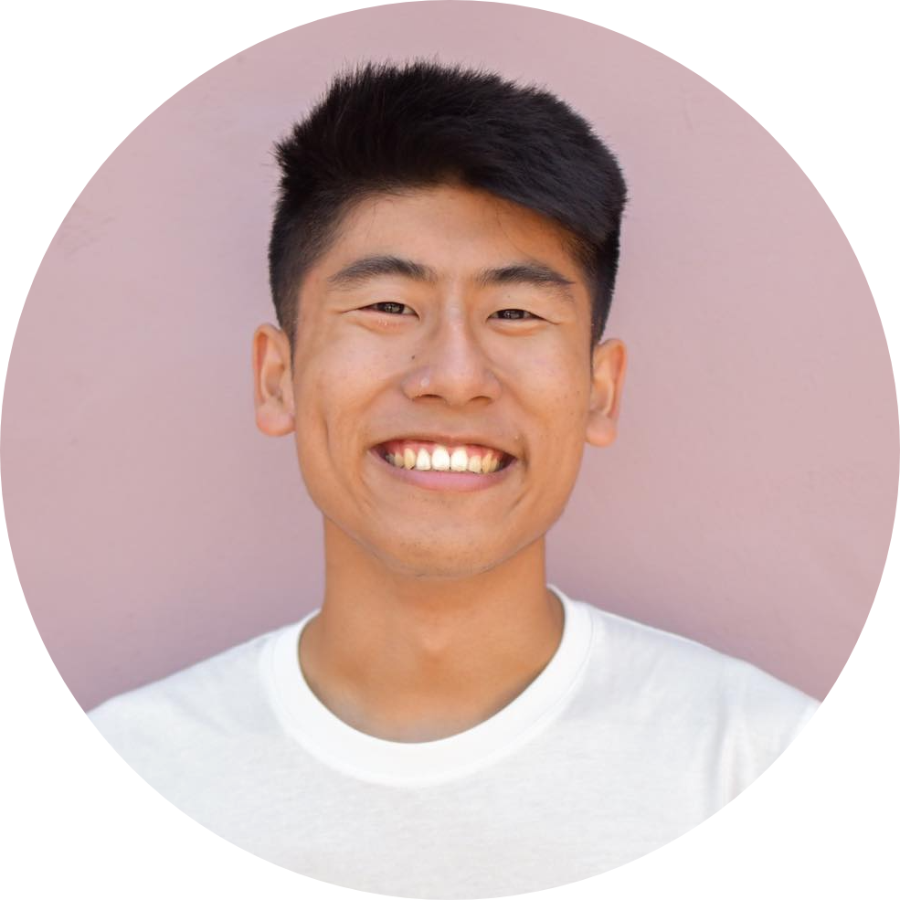

A little about me, what I've done, and what I've been up to...
I'm am a junior studying computer science at the University of Michigan in Ann Arbor, MI. On campus, I am an active member of Harvest Mission Community Church and my professional technology fraternity, Kappa Theta Pi.
I currently work part-time as a computer science instructor at Juni Learning. Every week, I teach six K-12 students about Python and block programming. Previously, I worked as a team leader at a STEM summer camp called Camp Galileo. At camp, I led a group of twenty first graders and helped teach them STEM. In addition, I worked with my peers and mentors to plan events for over 200 campers. I love spreading my passion for technology to other people, especially children.
In my leisure time, I enjoy watching korean dramas, going to grab boba with my friends, and playing video games and board games. In addition, I love learning new things outside of the classroom. Currently, I am learning more about PHP and AWS.